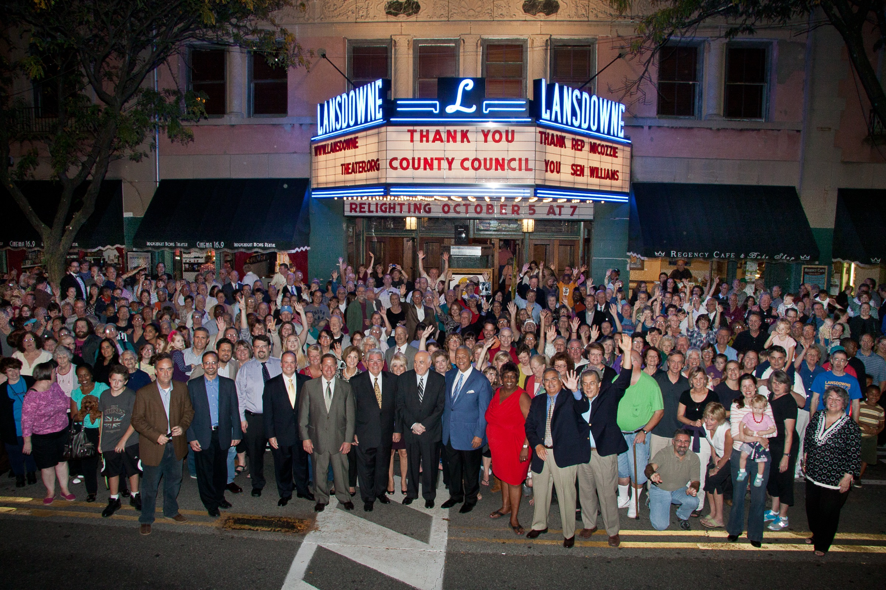

The Restoration · 2007 – 2025
Nobody restores a movie palace overnight. It happened the only way it could: one roof patch, one grant application, one restored window at a time. Here is the ledger.
How It Happened
In 2007, the building was weeks away from becoming a storage warehouse for an electrical supply company. Instead, the newly formed Historic Lansdowne Theater Corporation bought it — debt-free, with public funds — and began a restoration that would take eighteen years, span five presidential administrations, and draw support from more than a thousand donors from Lansdowne to Tokyo.
The Project Ledger

The Coalition
The restoration was funded by the Pennsylvania Redevelopment Assistance Capital Program, Keystone Grants from the PA Historical & Museum Commission, Delaware County Council, a federal earmark secured by Senator Casey and Representative Scanlon, the National Endowment for the Arts, federal historic tax credits, and an $11.9 million loan package from the Reinvestment Fund — alongside the National Trust for Historic Preservation, the Presser, Connelly, and Broughton foundations, the Foundation for Delaware County, corporate sponsors from WSFS Bank to Wawa, and more than 1,000 individual donors from across the country and as far away as Tokyo.
“Our goal is to transport people back to 1927 when they come in off the sidewalk, but in a way that meets modern needs.” — Matt Schultz, Executive Director
A century-old building never stops needing care. Your gift maintains what a thousand donors built.